The Elder Scrolls V: Skyrim is an action role-playing video game developed by Bethesda Game Studios and published by Bethesda Softworks. It is the fifth main installment in The Elder Scrolls series, following The Elder Scrolls IV: Oblivion, and was
released worldwide for Microsoft Windows, PlayStation 3, and Xbox 360 on November 11, 2011.
The game's main story revolves around the player character's quest to defeat Alduin the World-Eater, a dragon who is prophesied to destroy the world.
Gameplay
The Elder Scrolls V: Skyrim is an action role-playing game, playable from either a first or third-person perspective. The player may freely roam over the land of Skyrim which is an open world environment consisting of wilderness expanses, dungeons,
cities, towns, fortresses, and villages. Players may navigate the game world more quickly by riding horses or by utilizing a fast-travel system which allows them to warp to previously discovered locations. The game's main quest can be completed or
ignored at the player's preference after the first stage of the quest is finished. However, some quests rely on the main storyline being at least partially completed. Non-player characters (NPCs) populate the world and can be interacted with in a
number of ways: the player may engage them in conversation, marry an eligible NPC, kill them or engage in a nonlethal "brawl".

Features
ALL THE DRAGONS!
It's So Beautiful...
A Working World
It Fits on One Disc
Overhauled Menu System
Recommended System Requirements
Windows 7/Vista/XP PC (32 or 64 bit)
Processor: Quad-core Intel or AMD CPU
4GB System RAM
6GB free HDD space
DirectX 9.0c compatible NVIDIA video card with 1GB of RAM (NVIDIA GeForce GTX 260 or higher (i.e GTX550Ti)).